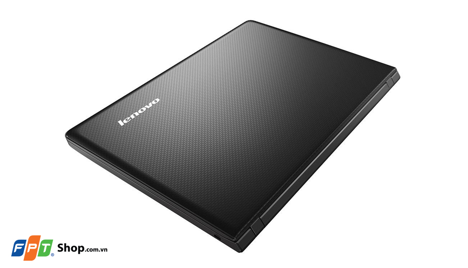
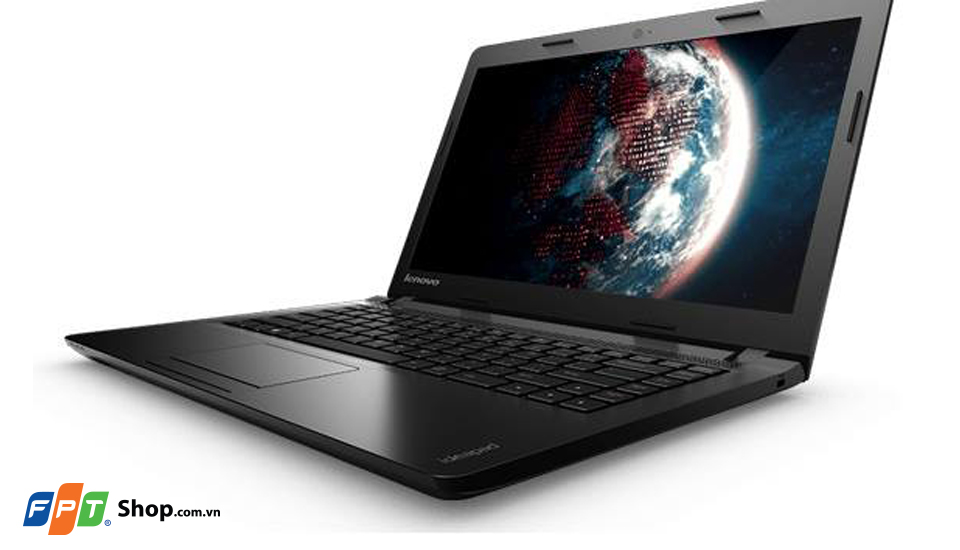
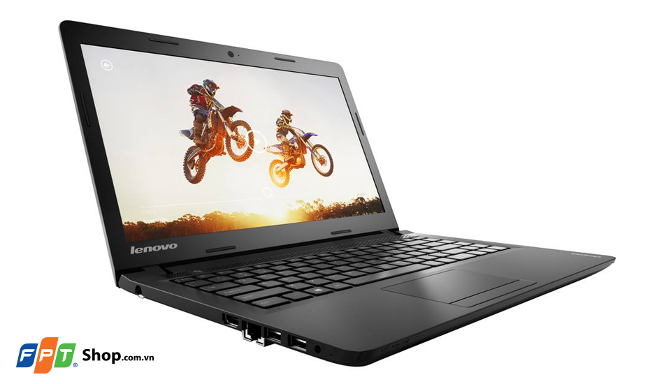
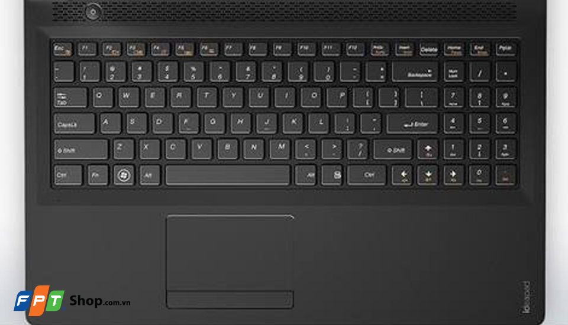
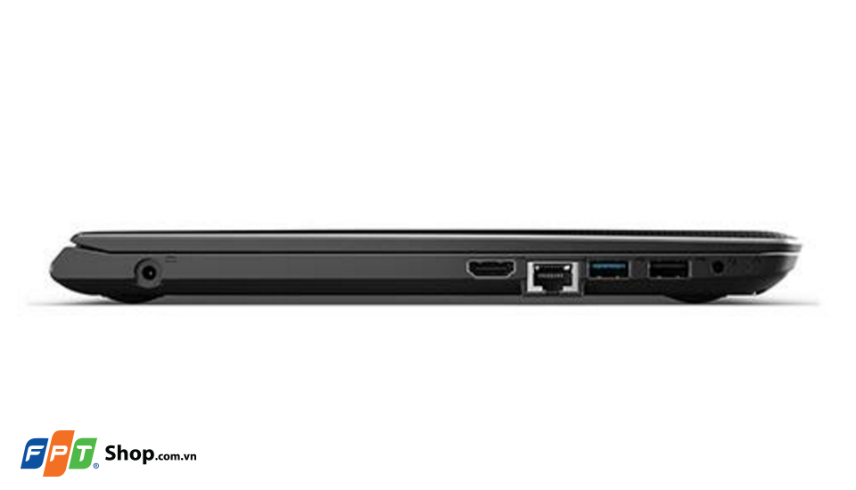

Nằm trong phân khúc giá rẻ, Lenovo Ideapad 100-14IBD vẫn đáp ứng được mọi nhu cầu làm việc văn phòng, giải trí đơn giản, cùng một thiết kế gọn nhẹ, thông minh mang, xứng đáng là lựa chọn tin cậy cho người dùng văn phòng và sinh viên.
Thiết kế cứng cáp, cổ điển
Ideapad 100-14IBD có thiết kế đơn giản với các chi tiết được gia công tỉ mỉ .Nắp máy phủ một lớp hoa văn dạng 3D nổi trông độc đáo và nổi bật đồng thời cũng tạo cảm giác bền chắc. Với kích thước tổng thể gọn gàng và khối lượng nhẹ, người dùng có thể bỏ máy vừa vặn vào ba lô và mang theo bên mình đến bất cứ nơi đâu.
Hiệu năng đáp ứng tốt nhu cầu công việc văn phòng và giải trí
Tuy có mức giá khá rẻ nhưng Lenovo Ideapad 100-14IBD vẫn được trang bị bộ xử lý Intel Core i3-5005U, đồ họa tích hợp Intel HD Graphics 5500, ổ cứng HDD lưu trữ lên đến 1 TB, cùng dung lượng RAM 4 GB mang lại trải nghiệm khá mượt mà với các tác vụ văn phòng, lướt web, giải trí hàng ngày với các game thông dụng.
Màn hình 14.0 inches HD
Lenovo Ideapad 100 - 14IBD trang bị màn hình rộng 14 inch HD độ phân giải 1366 x 768 pixels cho hình ảnh hiển thị khá tốt, sống động, màu sắc trung thực, độ tương phản cân đối, ánh sáng vửa đủ. Với chiếc Lenovo Ideapad 100 - 14IBD này bạn có thể cùng bạn bè hoặc gia đình hòa mình vào các bộ phim bom tấn một cách hấp dẫn và thoải mái.
Bàn phím tiện lợi
Sản phẩm sở hữu bàn phím có kích cỡ tiêu chuẩn, đầy đủ phím số, phím bấm vuông vức có kích thước lớn, khoảng cách giữa các phím hợp lý, giúp bạn thao tác dễ dàng. Các phím bấm êm ái, mềm mại hạn chế tiếng động tối đa. Ngoài ra, touchpad lớn để bạn sử dụng thoải mái khi làm việc, giải trí...
TouchPad chứng tỏ được nhiều hơn do bề mặt nhựa cứng, phím nhấn chuột trái và chuột phải giúp bạn thao tác dễ dàng mà không cần phải sử dụng chuột, cảm ứng đa điểm thu nhỏ, phóng to nhanh nhạy.
Kết nối đa dạng
Lenovo Ideapad 100 - 14IBD được trang bị đầy đủ các cổng kết nối mạng internet thông qua cổng kết nối mạng LAN, cổng wifi, bluetooth. Các cổng giao tiếp mở rộng như một cổng USB 2.0, một cổng USB 3.0 cho tốc độ cực nhanh, cổng kết nối HDMI giúp truy xuất dữ liệu ra màn hình lớn hơn, khe cắm thẻ nhớ 4 in 1 card reader, tai nghe, camera 0.3Mpx.